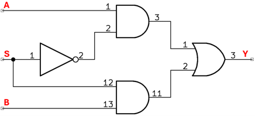

Un mutiplexer es un circuito electrónico digital que permite seleccionar una señal de entrada de varias posibles, con base en una señal de control. Este tipo de circuitos es muy común en transmisión de datos tanto de señales digitales como analógicas. En el ejercicio se va a seleccionar la entrada A o B, dependiendo de la señal de control S, la salida se da por Y.
Objetivo. Conocer y estudiar el funcionamiento de un multiplexer de dos entradas.
Procedimiento 1.
En este caso como se puede observar, la entrada S, la señal de control, se debe llevar a la compuerta AND, y a la compuerta NOT, por lo que se debe utilizar el auxiliar 1.
- Conectar la salida del interruptor 1, la entrada A, al pin 1 de la compuerta AND (74LS08).
- Conectar la salida del interruptor 2, la entrada B, al pin 13 de la compuerta AND (74LS08).
- Conectar la entrada S a uno de los pines de AUX 1. Conectar uno de los pines de AUX 1 al pin 1 de la compuerta NOT (74LS04). Conectar otro de los pines de AUX 1 al pin 12 de la compuerta AND (74LS08).
- Conectar el pin 2 de la compuerta NOT (74LS04) al pin 2 de la compuerta AND (74LS08).
- Conectar la salida 3 de la compuerta NAND (74LS08), a la entrada 1 de la compuerta OR (74LS32).
- Conectar la salida 11 de la compuerta NAND (74LS08), a la entrada 2 de la compuerta OR (74LS32).
- Conectar la salida 3 de la compuerta OR (74LS32) al borne de uno de los LEDs, hay se tiene la salida S.
- Ponga el interruptor en ON.
-
Llenar la tabla de verdad.
A S B Y 0 0 0 0 0 1 0 1 0 0 1 1 1 0 0 1 0 1 1 1 0 1 1 1
Procedimiento 2.
En este caso como se puede observar, la entrada S, la señal de control, se debe llevar a la compuerta AND, y a la compuerta NOT, por lo que se debe utilizar el auxiliar 1. En este caso se va a tomar como entraba B la señal del reloj. Suponemos que el reloj comienza en 1. Recordemos como es la señal del reloj:
- Conectar la salida del interruptor 1, la entrada A, al pin 1 de la compuerta AND (74LS08).
- Conectar el reloj como entrada S, al pin 13 de la compuerta AND (74LS08).
- Conectar la entrada B a uno de los pines de AUX 1. Conectar uno de los pines de AUX 1 al pin 1 de la compuerta NOT (74LS04). Conectar otro de los pines de AUX 1 al pin 12 de la compuerta AND (74LS08).
- Conectar el pin 2 de la compuerta NOT (74LS04) al pin 2 de la compuerta AND (74LS08).
- Conectar la salida 3 de la compuerta NAND (74LS08), a la entrada 1 de la compuerta OR (74LS32).
- Conectar la salida 11 de la compuerta NAND (74LS08), a la entrada 2 de la compuerta OR (74LS32).
- Conectar la salida 3 de la compuerta OR (74LS32) al borne de uno de los LEDs, hay se tiene la salida S.
- Ponga el interruptor en ON.
-
Llenar la tabla de verdad
A S B Y 0 0 
0 0 0 1
0 1